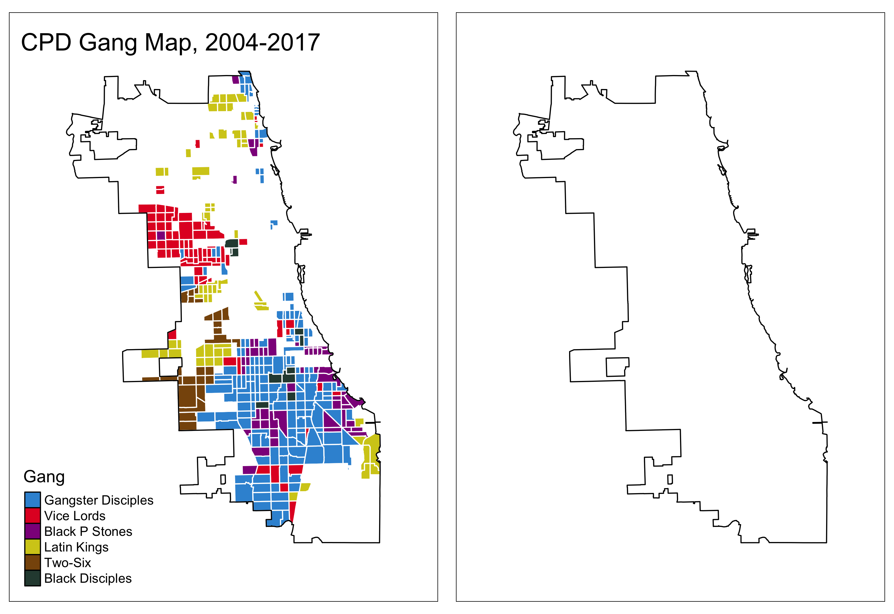
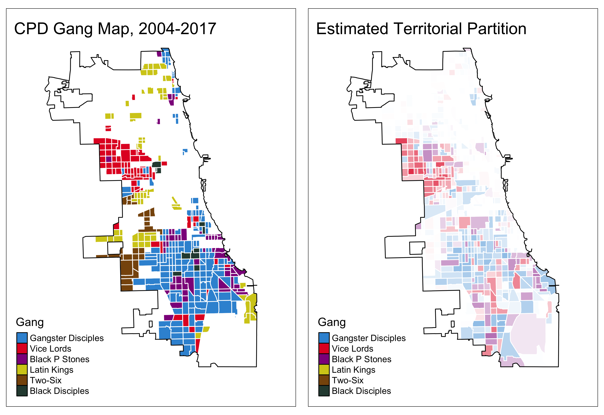

Gunshots and Turf Wars:
Inferring Gang Territories from Administrative Data
24 March 2020
Brendan Cooley | Noam Reich
Ph.D. Candidates
Princeton University
bcooley (at) princeton.edu | noamg (at) princeton.edu
Gunshots and Turf Wars
Gunshots
“In 2006 nearly 50 percent of the homicides and a large percentage of other violent crimes and property crimes committed in Chicago were attributed to street gangs that are involved in drug trafficking”
- National Drug Intelligence Center (2007)
- Inter- and intra-gang conflict in gang ethnographies
- Sanchez-Jankowski (1991), Decker (1996), Levitt and Venkatesh (2000), Papachristos (2009)
- Not unique to Chicago
- Howell and Griffiths (2018)
Turf Wars
“Gang violence is often sparked by competitive relations over turf. A gang’s turf has economic and symbolic value: the gang regulates who sells what on its street corners, and gang members take pride in controlling the blocks where they grew up. Encroaching on another gang’s turf can trigger violence and a series of retaliations as gang members avenge fallen comrades.”
- Vargas (2016), Wounded City
- Territorial rent-seeking: racketerring, drug-selling monopolies, smuggling
- Thrasher (1927), Sanchez-Jankowski (1991), Levitt and Venkatesh (2000), Venkatesh and Levitt (2000)
- Conflict over rent streams and challenges to reputations
- Brantingham et al. (2012), Papachristos, Hureau, and Braga (2013), Vargas (2016), Bueno De Mesquita (2018)
Measurement Problem
- Proposition: understanding gunshots requires understanding gangs
- Problem: gangs are covert organizations \(\implies\) knowledge of gangs remains anecdotal and spatially circumscribed
First-Order Descriptive Questions
- How many gangs operate within a given municipality?
- How is territory divided amongst them?
Existing Approaches
- Police Records: Bruhn (2019) (Chicago), Melnikov, Schmidt-Padilla, and Sviatschi (2019) (San Salvador)
- Not broadly available or not shared with public
- Reporting biases and auditability: how are data constructed?
- Newspapers, NLP, Mixed Methods (Blattman et al. 2019; Sobrino 2019; Signoret 2020)
- Require deep subject matter expertise, difficult to generalize beyond target locale
Approach
Observables: Time-stamped, geolocated homicides and nonfatal shootings
- Widely available in administrative records on crime
Unobservables:
- Number of gangs
- Territorial partition
Inferential Strategy
- Model data-generating process for shootings
- Non-gang
- Intra-gang
- Inter-gang
- Derive relationship between spatial covariance in shootings and unobservables
- Generalization of Trebbi and Weese (2019) to inter-group conflict
- Akin to stochastic block model (SBM) (Holland, Laskey, and Leinhardt 1983)
- Estimate model using observed spatial covariances
- Spectral clustering (Luxburg 2007; Lei and Rinaldo 2015; Chen and Lei 2018)
- Validate results using Chicago Police Department (CPD) gang maps (Bruhn 2019)
- Match partition function labels to those of CPD
Bottom Line

Bottom Line

Data
Gunshots
- Victim-based crime reports, 2001-2018
- Illinois Uniform Crime Reporting code, latitude, longitude, date-time
- Extract homicides and nonfatal shootings (aggravated battery with firearm)
- Project into census tract-months:
#r tracts_ntracts, 4,000 residents each
Turf
- Chicago Police Department internal reports, annual (Bruhn 2019)
- Number of gangs
- Territorial partition
- Findings
- 57 gangs
- Collective territory covers 1/3 of city
- 67 percent of Chicago residents live in gang-controlled territory
Gunshots

Gunshots
Model
Observables
- \(\mathcal{N} = \left\{1, ..., N \right\}\) - districts
- \(1, ..., T\) - periods (months)
- \(r_i\) - the number of residents in territory \(i\)
- \(v_i^t = x_i^t + y_i^t\)
- \(y_i^t\) - non-gang related shootings
- \(x_i^t\) - gang-related shootings
Unobservables
- \(\mathcal{K} = \left\{1, ..., K \right\}\) - gangs
- \(\pi : \mathcal{N} \rightarrow \left\{ 0, \mathcal{K} \right\}\) - partition function
- \(\pi(i) = 0\) indicates the absence of any gang activity.
- \(\mathcal{N}_k\) - the set of territories controlled by gang \(k\)
- \(n_k = | \mathcal{K}_k |\) - the number of territories controlled by gang \(k\)
- \(\mathcal{K}_0\) - the set of unoccupied territories.
- \(m_k\) - the number of members of gang \(k\)
Varieties of Violence
Non-Gang
- \(\eta_i\) - the probability a resident commits a shooting
- independent across districts
Intra-Gang
- \(\xi_k^t\) - probability a member of gang \(k\) shoots a member of his own gang
- Assumption 1 (Non-negativity): \(\mathbb{E} [ \xi_k^t ] > 0\) for all \(k \neq 0\) and \(\xi_0^t = 0\) for all \(t\)
- Assumption 2 (Independence): \(\mathbb{E} [ \xi_k^t \xi_{\ell}^t ] - \mathbb{E} [ \xi_k^t ] \mathbb{E}[ \xi_{\ell}^t ] = 0\) for all \(k \neq \ell\)
Inter-Gang
- \(\epsilon_{k, \ell}^t\) - the probability a member of gang \(k\) shoots a member of gang \(\ell\)
- Assumption 3 (Quasi-symmetry): \(c_{k} \epsilon_{k, \ell}^t = c_{\ell} \epsilon_{\ell, k}^{t}\) with the normalization \(c_1 = 1\). If \(k = 0\) or \(\ell = 0\) then \(\epsilon_{k, \ell}^t = 0\) for all \(t\)
- Assumption 4 (Independence): \(\mathbb{E} [ \epsilon_{k, \ell}^t \epsilon_{m, n}^t ] - \mathbb{E} [ \epsilon_{k, \ell}^t ] \mathbb{E} [ \epsilon_{m, n}^t ] = 0\) for \(m, n \notin \left\{ k, \ell \right\}\)
Varieties of Violence
Gang-Related Shootings
\[ \mathbb{E} [ x_i^t ] = \underbrace{ \frac{m_{\pi(i)}}{n_{\pi(i)}} \mathbb{E} [ \xi_{\pi(i)}^t ]}_{ \text{intra-gang} } + \underbrace{\sum_{k \neq \pi(i)} \frac{m_k}{n_{\pi(i)}} \mathbb{E} [ \epsilon_{k, \pi(i)}^t ]}_{ \text{inter-gang} } \]
Non-Gang Related Shootings
\[ \mathbb{E} [y_i^t] = \eta_i r_i \] \[ \text{Var} [ y_i^t ] = \psi_i = \eta_i (1 - \eta_i) r_i \]
Covariance Structure
Proposition 1: The covariance in shootings between districts \(i\) and \(j\) is \[ a_{ij} = \begin{cases} \sum_{k \neq \pi(i)} \left( \left( \frac{m_k}{n_{\pi(i)}} \right)^2 \text{Var} [ \epsilon_{\pi(i), k}^t ] \right) + \left( \frac{m_{\pi(i)}}{n_{\pi(i)}} \right)^2 \text{Var}[ \xi_{\pi(i)}^t ] + \psi_i & \text{if } i = j \\ \color{bcOrange} \sum_{k \neq \pi(i)} \left( \left( \frac{m_k}{n_{\pi(i)}} \right)^2 \text{Var} [ \epsilon_{\pi(i), k}^t ] \right) + \left( \frac{m_{\pi(i)}}{n_{\pi(i)}} \right)^2 \text{Var} [ \xi_{\pi(i)}^t ] & \text{if } \pi(i) = \pi(j) \\ \color{bcOrange} \frac{m_{\pi(i)}}{n_{\pi(j)}} \frac{m_{\pi(j)}}{n_{\pi(i)}} \frac{c_{\pi(j)}}{c_{\pi(i)}} \text{Var} [\epsilon_{\pi(i), \pi(j)}^t] & \text{if } \pi(i) \neq \pi(j) \\ 0 & \text{otherwise} \end{cases} \]
Corollary 1 (Block Structure):
- If \(\pi(i) = \pi(j) = k\) and \(i \neq j\) then \(a_{ij} = b_{kk}\) constant for all \(i, j\).
- If \(\pi(i) = k\) and \(\pi(j) = \ell\) with \(\ell \neq k\) then \(a_{ij} = b_{k \ell}\) constant for all \(i, j\).
Covariance Structure
\[ A_{N \times N} = (a_{ij})_{ \left\{ i,j \in \mathcal{N} \right\} } \]
Covariance Structure and Latent Variables
- \(\Psi = \text{diag}(\psi_1, \dots \psi_N)\) (variance of non-gang shootings)
- \(Q = A - \Psi\) (gang-related spatial covariance matrix)
- \(B_{K + 1 \times K + 1} = (b_{k \ell})_{ \left\{ k, \ell \in \mathcal{K} \right\} }\) (within-gang variance and cross-gang covariances)
- \(\Theta_{N \times K + 1} = (\theta_{ik})_{\left\{ i \in \mathcal{N}, k \in \mathcal{K} \cup 0 \right\} }\) (binary membership matrix, \(\theta_{ik} = 1\) if \(\pi(i) = k\) and \(0\) otherwise)
\[ Q = \Theta B \Theta^T \]
- Stochastic blockmodel (Holland, Laskey, and Leinhardt 1983; Jin 2015; Lei and Rinaldo 2015)
Estimation
Targets
- Partition function, \(\pi\) (membership matrix: \(\Theta\))
- Number of groups \(K\)
- Non-gang territory, \(\mathcal{N}_0\)
Method
- Hold \(K\) fixed, estimate partition (\(J = K + 1\))
- Cross validate over many trial \(K\) to estimate number of groups
Estimation Problem
Finite Sample Noise
\[ \tilde{A} = \mathbb{E} [A] + \Phi \]
- \(\Phi = (\phi_{ij})_{ \left\{ i, j \in \mathcal{N} \right\} }\)
- \(\mathbb{E} [ \phi_{ij} ] = 0\) for all \(i, j\)
\[\begin{align*} Q - \text{diag}(Q) &= \mathbb{E}[A] - \text{diag}(\mathbb{E}[A]) \\ &= \tilde{A} - \Phi - \text{diag}(\mathbb{E}[A]) \\ \Phi - \text{diag}(\Phi) &= \left( \tilde{A} - \text{diag}(\tilde{A}) \right) - \left( Q - \text{diag}(Q) \right) \end{align*}\]
Moment Estimator
\[\begin{equation} \label{eq:estimator} (\hat{\Theta}, \hat{B}) = \argmin_{B \in \mathbb{R}^{J \times J}, \Theta \in \mathbb{M}^{N \times J}} \lVert \Phi - \text{diag}(\Phi) \rVert_F \end{equation}\]
Eigenstructure of \(Q\) (Lei and Rinaldo (2015))
- \(\Delta = \text{diag}(\sqrt{n_1}, \dots, \sqrt{n_{J}})\)
\[\begin{align*} Q &= \Theta B \Theta^T \\ &= \Theta \Delta^{-1} \Delta B \Delta \Delta^{-1} \Theta^T \\ &= \Theta \Delta^{-1} Z \Lambda Z^T \Delta^{-1} \Theta^T \\ &= \Theta X \Lambda X^T \Theta^T \end{align*}\]
- \(\Lambda = \text{diag}(\lambda_1, ..., \lambda_{J})\) nonzero eigenvalues of \(\Delta B \Delta\)
- \(Z_{N \times J}\) associated eigenvectors
- \(X = \Delta^{-1} Z\)
Spectral Clustering: Relate eigenvectors of empirical covariance matrix \(\tilde{A}\) to those of \(Q\)
\[ \tilde{A} - \text{diag}(\tilde{A}) = \tilde{U} \tilde{\Lambda} \tilde{U}^T \]
Modified Estimation Problem
\[\begin{align*} \left( \hat{\Lambda}, \hat{X}, \hat{\Theta} \right) &= \argmin_{ \Lambda \in \mathbb{D}^{J \times J}, X \in \mathbb{R}^{J \times J}, \Theta \in \mathbb{M}^{N \times J} } \lVert \Phi - \text{diag}(\Phi) \rVert_F \\ &= \argmin_{ \Lambda \in \mathbb{D}^{J \times J}, X \in \mathbb{R}^{J \times J}, \Theta \in \mathbb{M}^{N \times J} } \lVert \left( \tilde{A} - \text{diag}(\tilde{A}) \right) - \left( Q - \text{diag}(Q) \right) \rVert_F \\ &= \argmin_{ \Lambda \in \mathbb{D}^{J \times J}, X \in \mathbb{R}^{J \times J}, \Theta \in \mathbb{M}^{N \times J} } \lVert \tilde{U} \tilde{\Lambda} \tilde{U}^T - \left( \Theta X \Lambda X^T \Theta^T - \text{diag}(Q) \right) \rVert_F \\ &\approx \argmin_{ \Lambda \in \mathbb{D}^{J \times J}, X \in \mathbb{R}^{J \times J}, \Theta \in \mathbb{M}^{N \times J} } \lVert \color{bcOrange} \tilde{U} \color{black} \tilde{\Lambda} \color{bcOrange} \tilde{U}^T \color{black} - \color{bcOrange} \Theta X \color{black} \Lambda \color{bcOrange} \left( \Theta X \right)^T \color{black} \rVert_F \end{align*}\]
- Set \(\hat{\Lambda} = \tilde{\Lambda}\)
\[\begin{equation} \label{eq:kmeans} \left( \hat{X}, \hat{\Theta} \right) = \argmin_{ X \in \mathbb{R}^{J \times J}, \Theta \in \mathbb{M}^{N \times J} } \lVert \color{bcOrange} \Theta X - \tilde{U} \color{black} \rVert_F \end{equation}\]
- K-means problem
Inter-Gang Conflict Estimates
\[\begin{equation} \label{eq:B} \hat{B} = \hat{X} \hat{\Lambda} \hat{X}^T \end{equation}\]
Non-Gang Territory
- No covariance with gang territory in expectation,
- \(\mathbb{E} [ b_{0k} ] = 0\) for all \(k \neq 0\)
Estimator
\[\begin{equation} \label{eq:nc} \min_{ k \in \left\{ 1, ..., J \right\} } \lVert ( \hat{B} - \text{diag}(\hat{B}) )^{(k)} \rVert_2 \end{equation}\]
Number of Groups (Chen and Lei 2018)
- For each \(k \in \left\{ 1, ..., \bar{K} \right\}\),
- Randomly split districts into folds \(\mathcal{N}_1, \dots, \mathcal{N}_V\).
- For each fold, estimate \(\hat{\Theta}(v)\) and \(\hat{B}(v)\).
- For each fold, calculate the predictive loss on \(\tilde{A}^{(v,v)}\), \(L_v(\tilde{A}, \hat{A}(v))\)
- Average the predictive loss across folds, \(\bar{L}_{k}(\tilde{A})\).
- Construct the sequence of changes in predictive loss, \(\delta\).
- Select \(\hat{J}\) at first point in sequence where predictive loss does not decrease
Results
- 4 gangs detected
Empirical Covariances
Territorial Partition
Conflict Intensities
Next Steps
- Validation
- Calculate empirical loss relative to Chicago gang map
- Uncertainty
- Bootstrap tract-months, calculate confidence metrics for partition function, intervals for number of groups
- Robustness
- Different levels of resolution, block groups?
- Extend to other cities
Thank You
Changes in Territory over Time
- Bruhn (2019), Back
Blattman, Christopher, Donald P. Green, Daniel Ortega, and Santiago Tobon. 2019. “Hot Spots Interventions at Scale: the Direct and Spillover Effects of Policing and City Services on Crime.”
Brantingham, P. Jeffrey, George E. Tita, Martin B. Short, and Shannon E. Redi. 2012. “The Ecology of Gang Territorial Boundaries.” Criminology 50 (3): 851–85.
Bruhn, Jesse. 2019. “The Geography of Gang Violence.”
Bueno De Mesquita, Ethan. 2018. “Territorial Conflict over Endogenous Rents.” Journal of Politics.
Chen, Kehui, and Jing Lei. 2018. “Network Cross-Validation for Determining the Number of Communities in Network Data.” Journal of the American Statistical Association 113 (521): 241–51.
Decker, Scott H. 1996. “Collective and normative features of gang violence.” Justice Quarterly 13 (2): 243–64.
Holland, Paul W., Kathryn Blackmond Laskey, and Samuel Leinhardt. 1983. “Stochastic blockmodels: First steps.” Social Networks 5 (2): 109–37.
Howell, James C, and Elizabeth Griffiths. 2018. Gangs in America’s communities. Sage Publications.
Jin, Jiashun. 2015. “Fast Community Detection by SCORE.” The Annals of Statistics 43 (1): 57–89.
Lei, Jing, and Alessandro Rinaldo. 2015. “Consistency of Spectral Clustering in Stochastic Block Models.” The Annals of Statistics 43 (1): 215–37.
Levitt, Steven D, and Sudhir Alladi Venkatesh. 2000. “An economic analysis of a drug-selling gang’s finances.” Quarterly Journal of Economics, 755–89.
Luxburg, Ulrike von. 2007. “A tutorial on spectral clustering.” Statistics and Computing 17 (4): 395–416.
Melnikov, Nikita, Carlos Schmidt-Padilla, and Maria Micaela Sviatschi. 2019. “Gangs, Labor Mobility, and Development.”
National Drug Intelligence Center. 2007. “Chicago High Intensity Drug Trafficking Area Drug Market Analysis.” U.S. Department of Justice.
Papachristos, Andrew V. 2009. “Murder by Structure: Dominance Relations and the Social Structure of Gang Homicide.” American Journal of Sociology 115 (1): 74–128.
Papachristos, Andrew V., David M. Hureau, and Anthony A. Braga. 2013. “The Corner and the Crew: The Influence of Geography and Social Networks on Gang Violence.” American Sociological Review 78 (3): 417–47.
Sanchez-Jankowski, Martin. 1991. Islands in the street: Gangs and American urban society.
Signoret, Patrick. 2020. “Mapping Criminal Organizations to Study Subnational Conflict and Politics.”
Sobrino, Fernanda. 2019. “Mexican Cartel Wars: Fighting for the U.S. Opioid Market,” 1–61.
Thrasher, Frederic Milton. 1927. The gang: A study of 1,313 gangs in Chicago. Chicago IL: University of Chicago Press.
Trebbi, Francesco, and Eric Weese. 2019. “Insurgency and Small Wars: Estimation of Unobserved Coalition Structures.” Econometrica 87 (2): 463–96.
Vargas, Robert. 2016. Wounded city: Violent turf wars in a Chicago barrio. Oxford University Press.
Venkatesh, Sudhir Alladi, and Steven D. Levitt. 2000. “"Are we a family or a business?" History and disjuncture in the urban American street gang.”